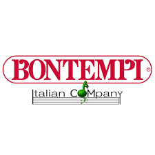

AX-Edge ha un design elegante e moderno
con un look personalizzabile tramite le
Edge Blade intercambiabili, 49 tasti di
dimensioni standard e un set di suoni creato
appositamente per i keytarist.
E in tutto l'AX-Edge, troverai funzionalità
pensate per darti la libertà e la sicurezza di
esprimerti veramente sul palco. La presenza
scenica è tutto e tu ti impegni a sviluppare la
tua immagine come solista o band.
L'AX-Edge è stato progettato non solo per un look
straordinario sul palco, ma anche per abbinarsi
al tuo stile unico
PREZZO :999€
MARCA : ROLAND
MODELLO: AX-EDGE

Kross2 88 MB la Synth Workstation "tuttofare" definitiva, caratterizzata da un'ampia tavolozza timbrica, potenza delle
prestazioni, tastiera pesata, sequencer e campionamento è ora disponibile con una nuova finitura gommata opaca nera. Questo nuovo modello possiede naturalmente tutte le doti di immediatezza d'uso e potenza sonora del Korg Kross, a cui si aggiunge un'espansione della memoria PCM con molti nuovi Program, tra cui un pianoforte da concerto dinamico e ricco di sfumature.
PREZZO :1099€
MARCA : KORG
MODELLO:KROSS 88 MB

Una tastiera elettronica a 31 tasti
con microfono, gambe e sgabello.
E' dotata di 4 pad per suonare la batteria,
22 brani pre-registrati e di una comoda
funzione per la registrazione
ed il riascolto delle melodie.
PREZZO :38.90€
MARCA : BONTEMPI
MODELLO: 13 3240 Tastiera per bambini
